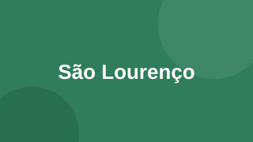
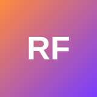
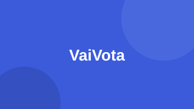
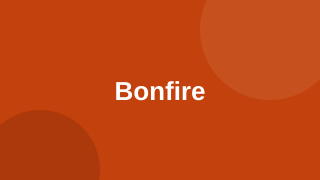
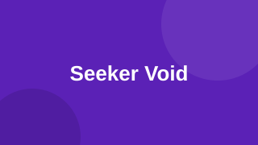

Site Associação São Lourenço
Site institucional com painel administrativo próprio para notícias, projetos e galeria de fotos.
Next.js · TypeScript · Supabase · Vercel

Olá, eu sou
Desenvolvedor de Sistemas · Estagiário de TI na Energisa
Ver projetosSou de Cataguases-MG, técnico em Informática pelo CEFET-MG (Leopoldina) e estou cursando o Técnico em Desenvolvimento de Sistemas no SENAI Cataguases. Desde abril de 2026 atuo como estagiário de TI na Energisa. Gosto de construir sistemas web completos, do banco de dados à interface, e também desenvolvo jogos e ministro aulas de HTML e CSS para alunos do ensino médio.

Site institucional com painel administrativo próprio para notícias, projetos e galeria de fotos.
Next.js · TypeScript · Supabase · Vercel

Plataforma de votação white-label para eventos, usada em torneio de TI e no Festival Ver e Fazer Filmes.
React · TypeScript · Node.js

Rede social para gamers, com telas de login e feed construídas do zero.
HTML · CSS · JavaScript · PHP

Demo de jogo de plataforma 2D com quatro chefes elementais e um chefe final.
Godot Engine · GDScript